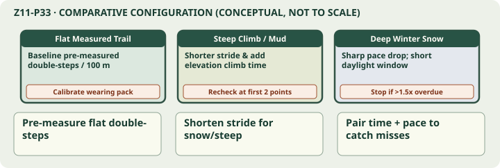

Z11-P33 · Navigation, weather and rescue · Adapted historical material
Estimate walking distance using pace count and terrain-adjusted timing
Track roughly how far you have traveled along a leg so you know when an expected junction or landmark is overdue.
When it applies · Trail and backcountry navigation between verified map checkpoints.
Equipment · Pre-measured personal pace count (double-steps per 100 meters or 100 yards) and wristwatch.

Actions
- Measure your normal double-step pace count (counting every time your left foot strikes) over a measured flat 100-meter or 100-yard course at home wearing a typical pack before heading to the backcountry.[E01, ED]
- Adjust distance and time expectations downward for uphill grades, deep snow, heavy mud, thick brush, heavy packs and group fatigue—terrain shortens stride length dramatically compared to flat pavement.[E01, E11, ED]
- Pair pace counting (best for short segments under a few hundred yards) with elapsed clock time (best for longer trail legs, adding extra minutes for elevation climb) so you catch missed junctions early.[E01, ED]
Failure recognition · Assuming a 3-mph flat-park walking pace applies in ankle-deep winter snow or steep rocky climbs, misjudging arrival time by hours.[E01, E11]
Verify · Recalibrate your elapsed-time estimate against actual map distance at the first two confirmed trail checkpoints.[E01, ED]
Stop or change course · When elapsed time or pace count passes 1.5x the expected window for a checkpoint without seeing it, STOP immediately and verify position rather than pushing further.[T06, N09]
Evidence and editorial notes
- E01 · Minnesota DNR · Safety in State Forests (current web edition)
- Section: Before your trip and while visiting · Conditions: State-forest travel and backcountry planning
Support: Know the route, check conditions, carry navigation and safety equipment and share trip details.
Limitations: Conditions and trail maintenance vary seasonally across forest units. · Conflicting evidence: None; aligns with NPS-H.
Editorial note: Foundation for trip planning and pre-departure risk checks. · Specialist reviewer: Land management and search and rescue
Primary source · checked 2026-11-24 - E11 · NPS · Hike Smart (current web edition)
- Section: Plan your hike; Stay together · Conditions: Groups on hiking routes
Support: Choose a route suited to the group's abilities and hike at a pace that keeps the group together.
Limitations: Fast hikers moving ahead at junctions is a leading driver of preventable separation. · Conflicting evidence: None; aligns with SAR prevention principles.
Editorial note: Core reference for group accountability and pacing cards. · Specialist reviewer: Group leaders and search and rescue
Primary source · checked 2026-11-24 - N09 · NPS · Outdoor Emergency Plan (current web edition)
- Section: If You Get Lost; Seek help · Conditions: Lost hiker who cannot safely retrace steps and has sought rescue
Support: Report last known location and landmarks. Stay put while awaiting help unless an immediate threat requires getting to safety.
Limitations: Navigation, signaling method and safe movement depend on site and responder instructions. · Conflicting evidence: See A02 claim audit for boundaries.
Editorial note: Core evidence for lost-person psychology, signaling and SAR coordination cards. · Specialist reviewer: Search and rescue
Primary source · checked 2026-11-24 - T06 · NPS · Outdoor Emergency Plan (current web edition)
- Section: If you get lost or hurt; call for help · Conditions: Outdoor US emergency
Support: Communicate location, last known point, situation and needs. Stay put when unable to establish a safe route unless immediate danger requires movement.
Limitations: Cell signal is unreliable in backcountry terrain; pre-trip plans bridge communication gaps. · Conflicting evidence: None; core lost-person decision rule.
Editorial note: Foundation for stay/signal/move and dispatch handoff cards. · Specialist reviewer: Search and rescue
Primary source · checked 2026-11-24
Source lineage · B014 r01 slot R07 and NPS hiking safety; new manuscript · Classification · Adapted historical material.